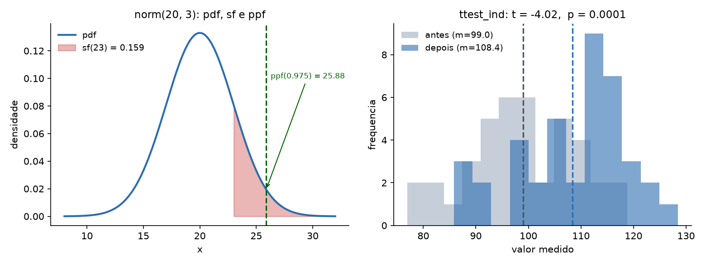
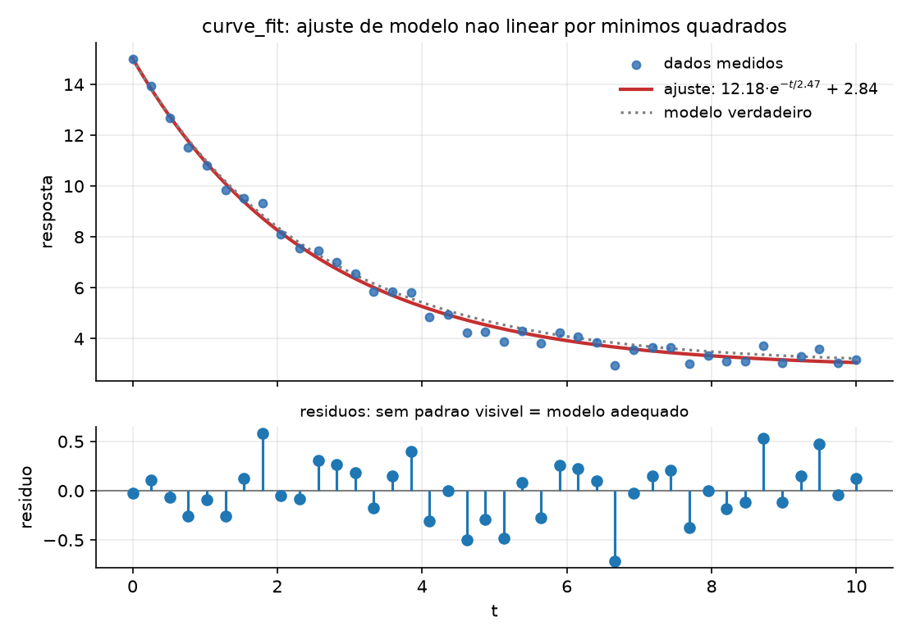
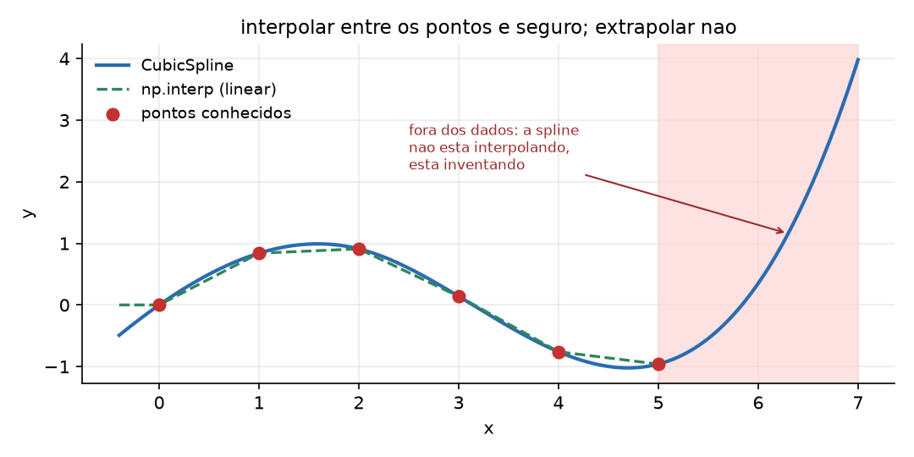
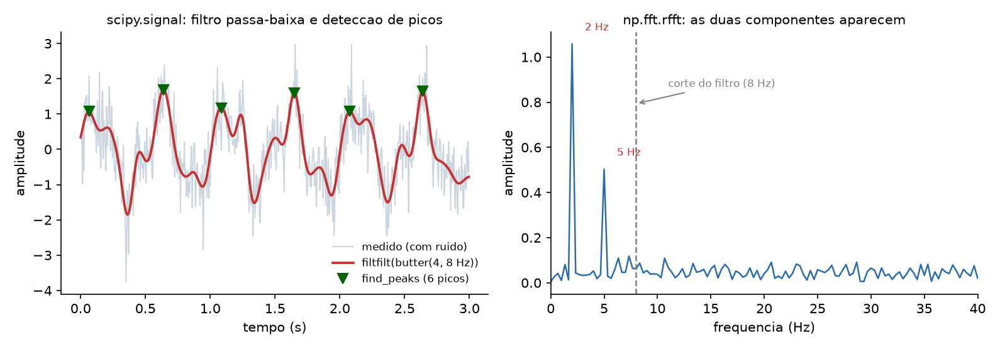

84 SciPy e a computação científica aplicada
O sensor registrou a resposta de um sistema decaindo ao longo de dez segundos. Você tem os pontos e sabe que a física é exponencial. Qual é a constante de tempo? Com que incerteza? E aquela diferença de nove pontos entre o grupo de controle e o tratado — é efeito ou é ruído?
NumPy dá o array e as operações elementares. SciPy dá os algoritmos: ajuste de curva, testes de hipótese, integração numérica, otimização, filtros, interpolação, álgebra linear avançada. É a camada onde o Python deixa de ser uma linguagem que manipula números e passa a ser uma ferramenta de análise numérica.
Este capítulo usa SciPy 1.18.0 sobre NumPy 2.5.2.
pip install scipy84.1 O mapa
SciPy é grande, e a primeira dificuldade é saber onde procurar. Não existe import scipy que sirva de algo: cada submódulo é importado separadamente.
84.2 stats: distribuições
Toda distribuição tem a mesma interface, e aprendê-la uma vez serve para as setenta:
from scipy import stats
d = stats.norm(loc=20.0, scale=3.0)
print("pdf(20) :", round(d.pdf(20), 6))
print("cdf(23) :", round(d.cdf(23), 6))
print("sf(23) :", round(d.sf(23), 6))
print("ppf(0.975) :", round(d.ppf(0.975), 6))
print("intervalo 95%:", np.round(d.interval(0.95), 4))
print("rvs(5) :", np.round(d.rvs(size=5, random_state=42), 4))pdf(20) : 0.132981
cdf(23) : 0.841345 <- P(X <= 23)
sf(23) : 0.158655 <- P(X > 23), mais preciso que 1-cdf
ppf(0.975) : 25.879892 <- o quantil
intervalo 95%: [14.1201 25.8799]
rvs(5) : [21.4901 19.5852 21.9431 24.5691 19.2975]
Os nomes valem decorar: pdf é a densidade, cdf acumula à esquerda, sf acumula à direita (a survival function), ppf é a inversa da cdf (dado o percentil, devolve o valor) e rvs sorteia.
Duas notas práticas. sf(x) é numericamente mais preciso que 1 - cdf(x) na cauda, onde a subtração perde dígitos significativos (Capítulo 10) — para probabilidades da ordem de 1e-16, 1 - cdf devolve zero e sf devolve o valor certo. E random_state= aceita o gerador do Capítulo 80, o que mantém a reprodutibilidade sob controle.
A mesma interface serve para as demais:
stats.binom(10, 0.3).pmf(3) # 0.266828 -- discreta usa pmf, nao pdf
stats.poisson(4).cdf(2) # 0.238103
stats.t(9).ppf(0.975) # 2.262157 -- o valor crítico da tabela t
stats.chi2(3).sf(7.815) # 0.04999484.3 stats: testes de hipótese
t, p = stats.ttest_ind(antes, depois)media antes : 99.018
media depois: 108.389
t = -4.0200 p = 0.000133
rejeita H0 a 5%? TrueCom 40 observações por grupo e diferença real de sete pontos, o teste detecta. Com 8 observações e diferença de três:
t = -1.7388 p = 0.104006 -> rejeita? FalseO mesmo efeito, dados insuficientes, conclusão oposta. Isso é poder estatístico, e é o motivo de “não deu significativo” nunca significar “não há efeito”.
O p-valor é a probabilidade de observar um efeito ao menos tão extremo quanto este, supondo que a hipótese nula seja verdadeira. Ele não é:
- a probabilidade de a hipótese nula ser verdadeira;
- a probabilidade de o resultado ser um acaso;
- uma medida do tamanho do efeito — com n grande, diferenças irrelevantes dão p minúsculo.
Relate sempre o tamanho do efeito e um intervalo de confiança ao lado do p. E não teste vinte hipóteses procurando uma abaixo de 0,05: a 5%, uma em vinte passa por sorte, e é isso que statsmodels.stats.multitest corrige.
Os testes mais usados, e a pergunta de cada um:
| função | pergunta |
|---|---|
ttest_ind |
duas amostras independentes têm médias diferentes? |
ttest_rel |
o mesmo sujeito mudou entre antes e depois? |
mannwhitneyu |
idem ttest_ind, sem supor normalidade |
chi2_contingency |
duas variáveis categóricas são associadas? |
shapiro, normaltest |
esta amostra parece normal? |
pearsonr, spearmanr |
as duas variáveis são correlacionadas? |
Um detalhe que muda resultados: ttest_ind supõe variâncias iguais por padrão. Quando os grupos têm dispersões muito diferentes, equal_var=False (o teste de Welch) é o correto — e, na dúvida, Welch é a escolha mais segura, porque perde pouco quando as variâncias são iguais.
84.3.1 Correlação: qual usar
r_pearson = stats.pearsonr(u, w).statistic
r_spearman = stats.spearmanr(u, w).statisticpearson (u,v) r=0.9601 p=4.877e-56
pearson (u,w) r=0.8144 <- relacao monotona nao linear
spearman(u,w) r=1.0000 <- pega a monotoniaw é exatamente exp(u) — relação perfeita, mas curva. Pearson mede associação linear e viu 0,81; Spearman mede associação monotônica (trabalha com os postos) e viu 1,00. Quando a relação não é reta, ou quando há valores extremos, Spearman é mais informativo.
E, sempre: correlação de 0,96 com p de 1e-56 não diz nada sobre causa. Diz que, nestes dados, as duas variáveis andam juntas.
84.3.2 Tabela de contingência
chi2, p, gl, esperado = stats.chi2_contingency(tabela)observado:
[[45 15]
[30 30]]
esperado :
[[37.5 22.5]
[37.5 22.5]]
chi2=6.9689 gl=1 p=0.008294A matriz esperado é a parte mais útil da saída: é o que se veria se não houvesse associação nenhuma. Comparar observado com esperado célula a célula diz onde está a diferença, o que o p-valor sozinho não diz.
84.4 optimize: ajustar um modelo aos dados
Esta é, na prática, a função mais usada do SciPy inteiro:
from scipy import optimize
def modelo(t, a, tau, c):
return a * np.exp(-t / tau) + c
popt, pcov = optimize.curve_fit(modelo, t_obs, y_obs, p0=(10.0, 1.0, 1.0))
erros = np.sqrt(np.diag(pcov))parametro verdadeiro estimado erro-padrao
a 12.0000 12.1788 0.1751
tau 2.5000 2.4739 0.0906
c 3.0000 2.8448 0.1105
residuo: media=0.00000 desvio=0.29078
R2 = 0.992633
Três coisas para levar deste exemplo:
A primeira letra do modelo é a variável independente; o resto são parâmetros a ajustar. É essa convenção que permite escrever o modelo como uma função Python comum.
pcov é a matriz de covariância, e sqrt(diag(pcov)) são os erros-padrão. Um ajuste sem incerteza não é um resultado — tau = 2.47 significa pouco; tau = 2.47 ± 0.09 significa algo. Se a matriz vier cheia de inf, o ajuste não convergiu de verdade, mesmo que popt tenha números plausíveis.
Olhe os resíduos, não o R². Um R² de 0,99 pode conviver com resíduos em forma de U — sinal de que o modelo está errado, ainda que ajuste bem. Resíduo bom é o que parece ruído: média zero e nenhum padrão visível.
84.4.1 p0 não é opcional
optimize.curve_fit(logistica, xs, ys) # sem chute inicial
optimize.curve_fit(logistica, xs, ys, p0=(90.0, 1.0, 10.0))sem p0 : [ 40.007 -181.8341 126.0381]
com p0 : [99.8702 0.7193 11.9926]Os valores verdadeiros eram (100, 0.7, 12). Sem p0, o SciPy chuta 1.0 para tudo, o otimizador cai num mínimo local e devolve parâmetros absurdos — com aviso apenas sobre a covariância, não sobre o resultado. Ajuste não linear sem chute inicial informado é loteria; e a ordem de grandeza de cada parâmetro geralmente se lê no próprio gráfico dos dados.
84.4.2 Minimizar e achar raiz
r = optimize.minimize(custo, x0=[0.0, 0.0])
print("minimo em:", np.round(r.x, 8))sucesso : True
minimo em: [ 3.00000004 -1.00000007]
valor : 2.0minimize recebe uma função que devolve um escalar e procura o mínimo. Aceita bounds= para restringir a busca e constraints= para restrições mais gerais:
com bounds [(0,1),(0,1)]: [1. 0.] valor 7.0Sempre confira r.success e r.message. Um resultado de minimize que não convergiu vem com números do mesmo tipo dos de um que convergiu.
E, para raiz de uma equação de uma variável:
optimize.root_scalar(lambda x: x**3 - 2*x - 5, bracket=[2, 3])raiz de x^3-2x-5 em [2,3]: 2.0945514815
f(raiz) = 3.55e-15 | convergiu: TrueO bracket=[a, b] exige que a função troque de sinal no intervalo, e com isso a convergência é garantida — bem mais robusto que dar um chute e esperar o Newton achar.
84.5 interpolate: entre os pontos, sim; fora, não
from scipy import interpolate
spl = interpolate.CubicSpline(xk, yk)
print("np.interp(2.5) :", np.interp(2.5, xk, yk))
print("CubicSpline(2.5) :", float(spl(2.5)))
print("derivada em 2.5 :", float(spl(2.5, 1)))
print("extrapolacao em 7:", float(spl(7.0)))np.interp(2.5) : 0.525
CubicSpline(2.5) : 0.596875
derivada em 2.5 : -0.80875
extrapolacao em 7: 3.98 <- CUIDADO, invencao
np.interp faz interpolação linear e resolve a maioria dos casos sem importar SciPy. CubicSpline dá uma curva suave, com derivadas contínuas — e por isso mesmo serve para estimar taxa de variação a partir de pontos discretos.
Mas note o último número. Os dados vão de 0 a 5; em x = 7 a spline devolveu 3,98, quando a função de origem (um seno) nunca passa de 1. Extrapolar com spline não é estimar, é inventar — a cúbica que passa suavemente pelos últimos pontos continua subindo indefinidamente. Se precisar de valores fora do domínio, use um modelo com justificativa física e curve_fit, não interpolação.
84.6 integrate: integrais e equações diferenciais
from scipy import integrate
val, err = integrate.quad(lambda x: np.exp(-x**2), 0, np.inf)integral de exp(-x^2) de 0 a inf = 0.8862269255
valor exato sqrt(pi)/2 = 0.8862269255
erro estimado = 7.10e-09Dez casas corretas, com limite infinito, numa linha. E quad devolve o valor e a estimativa de erro — o segundo elemento existe para ser conferido, não descartado.
Para equações diferenciais ordinárias, solve_ivp:
def decaimento(t, y):
return -0.5 * y
sol = integrate.solve_ivp(decaimento, [0, 10], [100.0], t_eval=[0, 2, 5, 10])t : [ 0 2 5 10]
y(t) : [100. 36.767016 8.216648 0.67539 ]
exato : [100. 36.787944 8.2085 0.673795]A solução numérica bate com a analítica na terceira casa. Se precisar de mais precisão, rtol e atol controlam a tolerância; e method="Radau" ou "BDF" resolvem sistemas stiff, em que o passo adaptativo do método padrão fica lento demais.
84.7 signal: filtrar e encontrar

from scipy import signal
b, a = signal.butter(4, 8, btype="low", fs=fs)
filtrado = signal.filtfilt(b, a, ruidoso)
picos, props = signal.find_peaks(filtrado, height=0.8, distance=40)desvio do ruido residual (bruto) : 0.6071
desvio do ruido residual (filtrado): 0.1691
picos encontrados : 6
nos instantes : [0.065 0.64 1.085 1.65 2.075]O filtro reduziu o ruído a 28% do original preservando o sinal. Dois pontos técnicos que importam:
Use filtfilt, não lfilter. Ambos aplicam o filtro; lfilter introduz atraso de fase (o sinal filtrado sai deslocado no tempo), e filtfilt aplica o filtro nos dois sentidos, cancelando o atraso. Para análise de dados já gravados, filtfilt é o certo; lfilter serve para processamento em tempo real, onde não se pode olhar o futuro.
find_peaks sem parâmetros encontra ruído. height descarta picos pequenos e distance impede que duas amostras vizinhas contem como dois picos. Sem os dois, um sinal ruidoso tem centenas de “picos”.
E o espectro, com a FFT do próprio NumPy:
espectro = np.fft.rfft(sinal)
freqs = np.fft.rfftfreq(sinal.size, 1 / fs)frequencias dominantes detectadas: [2. 5.] Hz
(o sinal foi construido com 2 Hz e 5 Hz)rfft (em vez de fft) para sinal real: devolve só metade do espectro, que é toda a informação, e é duas vezes mais rápido. E rfftfreq produz o eixo de frequências — sem ele você tem amplitudes sem saber a que frequência correspondem.
84.8 spatial, linalg e sparse
from scipy import spatial
arvore = spatial.KDTree(pontos) # 1000 pontos 2D
dist, idx = arvore.query([0.5, 0.5], k=3)3 vizinhos de (0.5, 0.5):
indice 320 dist 0.012102 em [0.5097 0.5072]
indice 697 dist 0.015511 em [0.4916 0.487 ]
indice 699 dist 0.020996 em [0.497 0.4792]
pares a menos de 0.02: 649Uma KDTree responde “quais são os k vizinhos mais próximos” em tempo logarítmico, em vez das n distâncias da força bruta. É a estrutura por trás de busca geográfica, de KNeighbors (Capítulo 85) e de qualquer coisa que precise de proximidade.
from scipy import linalg
linalg.solve(A, b) # resolve Ax = b
linalg.det(A)
linalg.eigvals(A)Sobre a sobreposição com numpy.linalg: o scipy.linalg é mais completo (mais decomposições, mais rotinas LAPACK expostas) e é o que se deve usar quando a rotina existe nos dois. Mas não espere ganho automático de velocidade:
np.linalg.inv : 100.48 ms
scipy.linalg.inv : 147.26 msNesta máquina o NumPy foi mais rápido. As duas chamam LAPACK; a diferença está nas verificações e na cópia de entrada, e varia com a compilação. Meça antes de trocar por desempenho.
E, quando a matriz é quase toda zeros:
from scipy import sparse
M = sparse.random_array((5000, 5000), density=0.0005, format="csr")matriz 5000x5000
densa (float64) : 200,000,000 bytes
esparsa CSR : 170,004 bytes
nao-zeros : 12,500Duzentos megabytes contra cento e setenta kilobytes — mil vezes menos, porque a esparsa guarda apenas os não-zeros e seus índices. Matriz de adjacência de grafo, matriz termo-documento de texto e sistema de elementos finitos são todos esparsos, e tratá-los como densos é a diferença entre rodar e estourar a memória.
84.9 🐍 Jeito Pythônico
Importe o submódulo, não o pacote. from scipy import stats, optimize — import scipy sozinho não dá acesso a nada, e essa é a primeira confusão de quem chega.
sf(x) em vez de 1 - cdf(x) na cauda da distribuição. A subtração perde precisão exatamente onde você precisa dela.
p0 informado em todo curve_fit não trivial. O chute padrão de 1,0 para tudo cai em mínimo local e devolve parâmetros absurdos com aviso só sobre a covariância.
Sempre relate a incerteza. np.sqrt(np.diag(pcov)) para ajuste, r.success e r.message para otimização, o erro estimado do quad. Resultado numérico sem incerteza é opinião com casas decimais.
Olhe os resíduos, não o R². R² alto com resíduo estruturado significa modelo errado que ajusta bem.
filtfilt para dados gravados, lfilter para tempo real. A diferença é atraso de fase, e ele desloca todos os picos que você for medir depois.
equal_var=False no ttest_ind quando as dispersões diferem — e, na dúvida, também. Welch perde pouco no caso simétrico.
Não extrapole com spline. Fora do domínio dos dados, interpolação vira invenção. Extrapolação exige modelo com justificativa.
Matriz quase vazia é scipy.sparse. Mil vezes menos memória não é otimização prematura; é a diferença entre o programa rodar e não rodar.
Saiba onde SciPy termina. Regressão com diagnóstico é statsmodels; aprendizado de máquina é scikit-learn. Forçar scipy.optimize nesses papéis funciona e é a escolha errada.
84.10 🧪 Laboratório
Passo 1 — ambiente.
mkdir lab-scipy && cd lab-scipy
python3.13 -m venv .venv
source .venv/bin/activate # Windows: .venv\Scripts\activate
python -m pip install scipy matplotlib
python -c "import scipy; print(scipy.__version__)"Passo 2 — a interface das distribuições. Para stats.norm(20, 3), calcule pdf(20), cdf(23), sf(23), ppf(0.975) e interval(0.95). Confirme que cdf(23) + sf(23) == 1.0 e que ppf(cdf(23)) volta a 23. Depois compare sf(50) com 1 - cdf(50) e explique o resultado.
Passo 3 — poder estatístico. Gere dois grupos com diferença real de 3 unidades e desvio 12. Rode ttest_ind com n = 8, 20, 50, 200 e 1000, e monte uma tabela de p-valores. Descubra em que tamanho o teste passa a detectar. Depois repita 200 vezes com n = 20 e conte em quantas o p ficou abaixo de 0,05 — essa fração é o poder do teste.
Passo 4 — o erro do p-valor. Gere dois grupos idênticos (mesma distribuição) 100 vezes e conte quantas vezes o p ficou abaixo de 0,05. O resultado deve ficar perto de 5. Essa é a taxa de falso positivo, e é por isso que testar muitas hipóteses sem correção produz descobertas falsas.
Passo 5 — correlação. Com u = rng.normal(0, 1, 100) e w = np.exp(u), compare pearsonr e spearmanr:
pearson (u,w) r=0.8144
spearman(u,w) r=1.0000Depois acrescente um ponto extremo em u e recalcule os dois. Qual dos dois se mexeu mais?
Passo 6 — ajuste de curva. Gere dados de a*exp(-t/tau) + c com ruído, ajuste com curve_fit e imprima os parâmetros com seus erros-padrão:
a 12.0000 12.1788 0.1751
tau 2.5000 2.4739 0.0906
c 3.0000 2.8448 0.1105Depois plote os resíduos. Em seguida ajuste um modelo errado (uma reta) aos mesmos dados, plote os resíduos e compare: o padrão em U é o diagnóstico.
Passo 7 — o p0. Ajuste uma logística sem p0 e com p0:
sem p0 : [ 40.007 -181.8341 126.0381]
com p0 : [99.8702 0.7193 11.9926]Depois inspecione pcov no caso sem p0 e confirme que ela é inútil.
Passo 8 — otimização. Minimize (x-3)² + (y+1)² + 2 e confirme o mínimo em (3, -1). Depois acrescente bounds=[(0,1),(0,1)] e explique por que o resultado é (1, 0). Por fim, minimize uma função com vários mínimos locais (por exemplo x**4 - 3*x**3 + 2 mais um seno) partindo de dois x0 diferentes e observe que chega a respostas diferentes.
Passo 9 — interpolação e o limite dela. Com seis pontos de sin(x) entre 0 e 5, compare np.interp e CubicSpline em x = 2.5. Depois avalie a spline em x = 7 e compare com sin(7):
extrapolacao em 7: 3.98sin(7) é 0,657. Plote o intervalo de 0 a 7 e olhe onde a curva se solta.
Passo 10 — sinal. Construa um sinal de 2 Hz + 5 Hz a 200 Hz de amostragem, acrescente ruído gaussiano, e: (a) filtre com butter(4, 8, fs=fs) mais filtfilt; (b) meça o desvio do resíduo antes e depois; (c) ache os picos com find_peaks(height=0.8, distance=40); (d) calcule o espectro com rfft/rfftfreq e confirme os dois picos em 2 e 5 Hz. Refaça (a) com lfilter e compare a posição dos picos — o atraso de fase aparece na hora.
Passo 11 — esparsa. Crie uma matriz 5000×5000 com densidade 0,0005 em formato CSR e compare a memória com a versão densa:
densa (float64) : 200,000,000 bytes
esparsa CSR : 170,004 bytesDepois multiplique a esparsa por um vetor e cronometre; faça o mesmo com a densa (se a memória permitir) e compare.
84.11 Resumo
- SciPy é organizado em submódulos importados separadamente (
from scipy import stats, optimize, ...);import scipysozinho não dá acesso a nada. - Todas as distribuições de
statscompartilham a interfacepdf/pmf,cdf,sf,ppf,rvs.sf(x)é mais preciso que1 - cdf(x)na cauda. - O p-valor não é a probabilidade de a hipótese nula ser verdadeira nem uma medida do tamanho do efeito. Relate efeito e intervalo de confiança ao lado dele; “não significativo” com n pequeno não é evidência de ausência.
ttest_indsupõe variâncias iguais: useequal_var=False(Welch) quando as dispersões diferirem. Pearson mede relação linear, Spearman mede monotonia e resiste a extremos.curve_fité a função mais usada do SciPy. Passep0, extraia os erros-padrão comnp.sqrt(np.diag(pcov))e julgue o ajuste pelos resíduos, não pelo R².- Verifique sempre o campo de convergência:
r.successnominimize, o erro estimado doquad, e umapcovfinita nocurve_fit. - Interpolar entre os pontos é seguro; extrapolar com spline é inventar — a cúbica dispara fora do domínio sem nenhum aviso.
- Em
signal,filtfiltpara dados gravados (sem atraso de fase) elfilterpara tempo real;find_peaksprecisa deheightedistancepara não contar ruído. Para espectro de sinal real,rfftcomrfftfreq. KDTreeresponde vizinho-mais-próximo em tempo logarítmico;scipy.sparsereduziu 200 MB a 170 KB numa matriz com 0,05% de não-zeros.- SciPy resolve o problema numérico. Modelagem estatística com diagnóstico é
statsmodels; aprendizado de máquina éscikit-learn, o assunto do próximo capítulo.